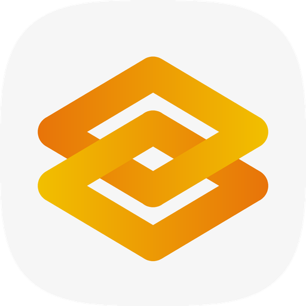

shorts-maker
내 유튜브 채널에 쇼츠 영상을 올리는 개인용 편집 도구
어떤 프로그램인가요?
shorts-maker 는 운영자가 자기 컴퓨터에서 쓰는 쇼츠(세로 짧은 영상) 편집 프로그램이에요. 영상을 편집해 완성한 뒤, 운영자가 직접 연결한 본인 유튜브 채널에 영상을 올리고, 썸네일과 고정 댓글을 다는 데 구글(유튜브) 연결을 씁니다.
- 연결한 본인 채널에 완성한 영상 올리기 · 썸네일 설정 · 고정 댓글 달기
- 편집에 참고할 원본 영상의 공개 댓글(글·좋아요 수) 읽기
- 연결한 채널 이름·프로필 그림 확인
판매하거나 다른 사람에게 서비스하는 앱이 아니며, 받은 정보는 운영자의 컴퓨터에만 저장돼요.
개인정보처리방침 · Privacy Policy
구글 계정 정보를 어떻게 쓰고 보관하는지는 개인정보처리방침 (Privacy Policy) 에 적어 두었어요.
About (English)
shorts-maker is a personal short-video editing tool that runs on the operator's own computer. It uses Google sign-in only to upload finished videos to the operator's own connected YouTube channels, set thumbnails, post a pinned comment, and read public comments of source videos for editing reference. It is not offered to the public. See the Privacy Policy.